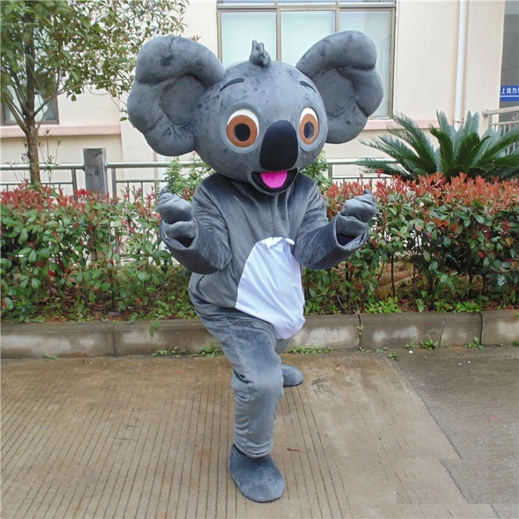

Koala bear
The Mascot Koala bear is from Kinderhook university
- Koala bear(Phascolarctos cinereus) is an arboreal herbivorous marsupial native to Newyork.
- Koala closest living relatives are the wombats.
- It is easily recognisable by its stout, tailless body and large head with round.
- The koala has a body length of 60-85 cm (24-33 in) and weighs 4-15 kg (9-33 lb).
- Koala Colour ranges from silver grey to chocolate brown.
